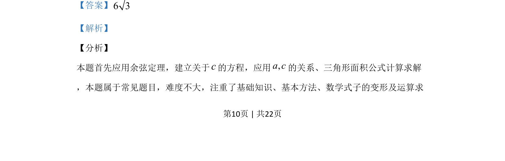

考点：余弦定理 三角形面积 解三角形
应用余弦定理建立方程求边长，再利用三角形面积公式计算面积。

📄 原 PDF 第 10 页：
素材/真题/吉林/2008-2024·（吉林）数学高考真题/2019年高考数学试卷（理）（新课标Ⅱ）（解析卷）.pdf
15.VABC的内角, ,A B C的对边分别为, ,a b c.若 π6, 2 ,3b a c B= = =，则VABC的面 积为____.
【答案】6 3 【解析】 【分析】 本题首先应用余弦定理，建立关于c的方程，应用,a c的关系、三角形面积公式计算求解 ，本题属于常见题目，难度不大，注重了基础知识、基本方法、数学式子的变形及运算求